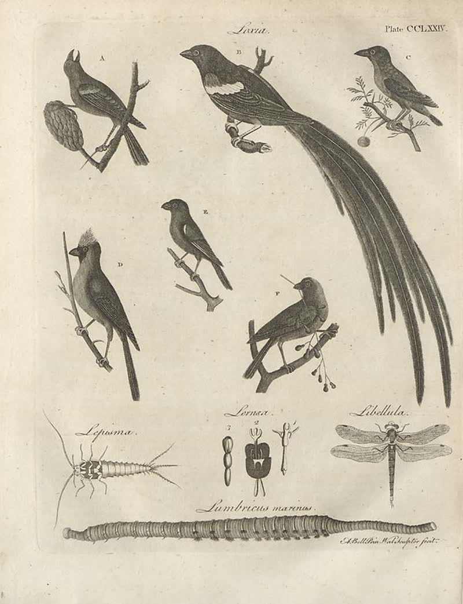

page-0948-7daaf1d3d872.jpg

Page ID: britannica:309f765b1ecc83e0a7f7762e44b4a927a7555443:train:948
Running head:
Image SHA-256: 7daaf1d3d872629a521dadf0381158556417d41f436b00ed4fbd44d78123473c

(untitled) [?]
Lava. Plate CCLXXIV.
Matched article: Russian monitor Lava (Wikipedia, revision 1323481597, re-rank score -4.0625) · comparison
OCR issues
No OCR issues recorded for this page.